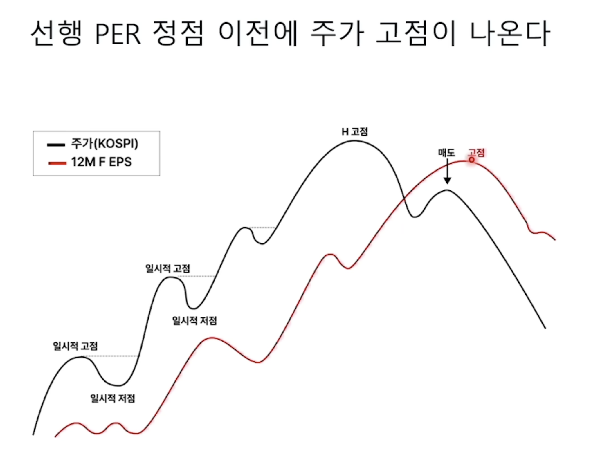

"매수는 기술, 매도는 예술"이라는 격언이 있다. 투자자라면 누구나 한 번쯤은 들어봤을 말이다.
특정 기업을 매수하는 판단은 상대적으로 더 서슴없고 자주 발생한다. 제품이 좋아서, 시장 전망이 밝아서, 때로는 그저 직감에 이끌려 매수 버튼을 누르기도 한다. 하지만 매도하는 것은 훨씬 더 허들이 높은 것 같다. 나름의 논리로 선택해 정들었던 종목을 떠나보내야 하는 일이기 때문이다. 매도를 위해서는 내가 세웠던 논리를 스스로 반박하고 철회하는 과정이 필요하다.
그래서 매도는 예술이라고 부르는 것 같다. 어찌 보면 스스로와의 싸움이며, 철학적인 고뇌라는 느낌마저 든다. 수익이 2배 오르면 팔아야 할까? 아니면 3배? 정해진 답이 없는 어려운 문제다.
이러한 고민을 하던 와중에 다음 영상을 보게 되었다. 윤지호 경제 평론가가 여러 가지 인사이트를 말씀해 주시는 좋은 영상이라 시청을 강력히 추천한다.
* 153 오류 등으로 영상이 재생되지 않을 경우: 게시자가 외부 사이트 재생을 제한한 영상입니다. 여기(유튜브에서 보기)를 클릭하시면 정상적으로 시청하실 수 있습니다.
기본 전제와 EPS의 개념
이 영상의 핵심 요지는 '선행 EPS는 주가의 후행 내지 동행 지표이며, 매도 시점 판단 시 참고할 수 있는 매우 중요한 지표'라는 것이다.
본격적인 논의에 앞서 하나의 가정을 전제하려 한다. 바로 "주가는 기업의 영업이익을 반영한다"는 기본 가치투자 원칙이 맞다는 것이다. 다른 조건이 동일하다면, 영업이익이 10배가 된 기업은 주가도 대략 10배가 될 것으로 기대할 수 있다.
EPS (Earning Per Share, 주당순이익)
EPS는 쉽게 말해 기업이 1주당 얼마의 이익을 창출했는지를 나타내는 지표다. 계산식은 다음과 같다.
* 개별 기업뿐만 아니라 코스피(KOSPI) 전체에 대해서도 코스피 지수를 코스피 PER로 나누어 시장 전체의 EPS를 산출할 수 있다.
후행 지표의 한계와 '선행 EPS'의 등장
일반적인 영업이익 지표는 주가에 비해 한참 후행(Lagging)한다. 투자에 실시간으로 참고하기에는 너무 늦다는 뜻이다.
예를 들어, 기업의 1분기(1~3월) 영업이익 성적표를 우리가 정확히 알기 위해서는 보통 5월 중순(분기보고서 제출 마감일)까지 기다려야 한다. 잠정 실적을 빨리 발표하는 기업이라도 4월 초중순은 되어야 한다. 즉, 실적이 발생한 시점과 우리가 그 숫자를 확인하는 시점 사이에 최소 한 달 반 이상의 시차가 발생한다.
해결책: 12개월 선행 EPS (12M Forward EPS)
이러한 '정보의 지연'을 보완하기 위해 사용하는 것이 바로 선행 EPS다. 앞으로 발생할 '예상 영업이익'을 바탕으로 산출하기 때문에 시장의 상황과 기대감이 주가에 훨씬 더 빠르게 반영된다.
Q. 아직 일어나지 않은 미래의 영업이익을 어떻게 알 수 있을까?
증권사의 애널리스트들이 거시경제 지표, 산업 트렌드, 기업의 가이던스 등을 종합적으로 분석하여 기업의 미래 실적 추정치를 발표한다. 금융정보업체(에프앤가이드 등)는 여러 증권사에서 발표한 이 추정치들의 평균을 내어 '컨센서스(시장 전망치)'를 만드는데, 선행 EPS는 바로 이 데이터를 바탕으로 계산된다.
📌 12개월 선행 EPS 계산 방식
- 분기별 컨센서스가 존재할 때: 앞으로 다가올 4개 분기(12개월)의 예상 EPS를 합산.
- 연간 컨센서스만 존재할 때: 당해년도 예상 EPS와 차년도 예상 EPS를 현재 시점(월별)의 비율에 맞게 가중 평균하여 산출.
선행 EPS를 활용한 '매도 타이밍' 잡기
그렇다면 이 지표로 주가의 '정확한 최고점'을 알 수 있을까? 유감스럽게도 그렇지는 않다. 주식 시장은 그 어떤 지표보다 미래를 빠르게 선반영하기 때문이다. 통상적으로 주가가 먼저 고점을 찍고 하락하기 시작하면, 그 뒤를 따라 선행 EPS 추정치가 고점을 찍고 꺾이는(하향 조정되는) 패턴을 보인다.
그럼에도 불구하고 선행 EPS는 주가가 조정을 받을 때, 이것이 단순한 흔들림인지 아니면 도망쳐야 할 하락장의 시작인지 판단하는 훌륭한 나침반이 된다.
일시적 조정 (Hold/Buy)
주가는 하락세를 보이는데, 선행 EPS는 꺾이지 않고 계속 우상향하는 경우. 이는 기업의 본질적인 이익 창출 능력은 좋아지고 있는데 시장의 변동성으로 인해 가격만 빠진 상태다. 매도할 이유가 없으며 오히려 매수 기회일 수 있다.
하락 추세 전환 (Sell)
주가가 하락한 이후, 뒤따라 선행 EPS 추정치마저 꺾이기 시작(하향 조정)하는 경우. 이는 실적 피크아웃(고점 통과)이 수치로 확인되는 순간이다. 최고점(머리)에서는 못 팔았더라도, 추세가 무너지는 이 시점(어깨)에서는 수익을 확정 짓고 매도하는 결단이 필요하다.

선행 EPS는 만능일까? (반도체 주식에 주목하는 이유)
그렇다면 선행 EPS는 모든 주식에 통용되는 만능 열쇠일까? 꼭 그렇지는 않다. 기업의 비즈니스 모델에 따라 그 효용성이 크게 달라진다.
-
1
성장주 (적용 어려움)
당장의 영업이익보다는 미래의 폭발적인 매출 성장성이나 꿈(Dream)을 먹고사는 고PER 성장주들의 경우, 이익 지표인 선행 EPS로 매도 시점을 잡기에는 잘 맞지 않는다.
-
2
안정적 현금창출 기업 (적용 어려움)
코카콜라나 네이버처럼 매년 안정적으로 비슷한 수준의 이익을 내는 캐시카우 기업들은 EPS의 드라마틱한 변동이 없기 때문에 매수/매도의 방향성을 잡기 모호하다.
-
3
시클리컬(사이클) 기업 ★ (가장 효과적)
선행 EPS 지표가 가장 강력한 위력을 발휘하는 곳이 바로 삼성전자, SK하이닉스와 같은 시클리컬(경기 민감주) 기업이다. 메모리 반도체 산업은 호황과 불황의 사이클에 따라 이익의 진폭이 엄청나게 크다. 따라서 '이익 추정치가 바닥을 찍고 턴어라운드 할 때 사고, 이익 추정치가 고점을 찍고 꺾일 때 파는 전략'이 역사적으로 가장 높은 적중률을 보여주었다.
[부록] 실전: 삼성전자 12개월 선행 EPS 및 PER 요약
현재 시점(2026년 6월 12일) 기준 향후 12개월(2026.06 ~ 2027.06)의 선행 실적 컨센서스를 월 단위 비중(월할 계산)으로 나누어 산출한 객관적 지표입니다.
1단계: 12개월 선행 당기순이익 산출
- 2026년 2분기 (0.5개월) 약 1조 2,103억 원
- 2026년 3분기 (전체 기간) 약 8조 7,696억 원
- 2026년 4분기 (전체 기간) 약 9조 5,778억 원
- 2027년 상반기 (5.5개월) 약 17조 3,749억 원
2단계: 12M Fwd EPS (주당순이익)
369,325,380,000,000
5,846,278,608
3단계: 12M Fwd PER (주가수익비율)
322,500원
63,173원
* 정확한 일할 계산(Daily weighting) 적용 시에도 선행 PER은 약 5.13배로 산출되며, 통용되는 월 단위 약식 계산 결과와 큰 오차가 없습니다.